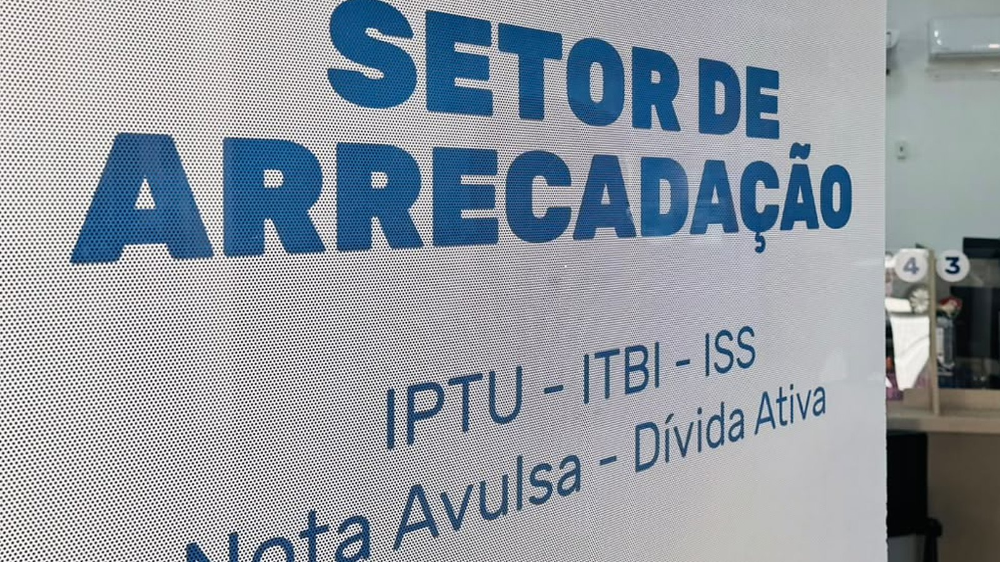

Itapema · Legislativo
Itapema · LegislativoQuem compra imóvel em Itapema passa a ter pelo menos 15 dias úteis para contestar a conta do ITBI
A regra aprovada em agosto, e o aumento de alíquota que ficou pelo caminho.
O anúncio saiu nesta quinta-feira, 17 de setembro, e vale para quem compra ou transfere imóvel na cidade: o imposto pode ser parcelado no cartão, o Banco do Brasil repassa o valor inteiro ao município de uma vez e o documento sai no dia seguinte, sem esperar a última parcela. O tamanho do imposto não está no aviso da Prefeitura. Fomos buscar na Declaração de Contas Anuais que o próprio município entrega ao Tesouro Nacional e montamos a série: o ITBI de Itapema saiu de R$ 43,9 milhões em 2023 para R$ 65,1 milhões em 2025.
Em 30 segundos · Modo de Leitura, formato original Santa Informa
O ITBI de Itapema aceita cartão de crédito.
Dá para parcelar.
O anúncio é de 17 de setembro de 2026.
É o imposto de quem compra ou transfere imóvel.
Quem opera a transação é o Banco do Brasil.
Mesmo parcelado, o município recebe tudo de uma vez.
Por isso não precisa esperar a última parcela.
O documento sai no dia seguinte.
Os cartórios precisam se cadastrar no site da Prefeitura.
Dúvidas: Secretaria de Finanças, no Paço Municipal.
Avenida Nereu Ramos, 134, Centro.
Telefone (47) 3268-8060.
WhatsApp (47) 3268-8067.
Agora o tamanho desse imposto.
Em 2025 o ITBI rendeu R$ 65,1 milhões.
Em 2024 foram R$ 51,2 milhões.
Em 2023, R$ 43,9 milhões.
Alta de 48,2% em dois anos.
Série montada por nós, no Tesouro Nacional.
É o terceiro maior imposto da cidade.
Na frente vêm o IPTU e o ISS.
Deu R$ 756 por morador em 2025.
A alíquota geral continua em 1,5%.
Financiamento habitacional paga 1%.
O aviso não diz quem paga a taxa do cartão.
Nem em quantas parcelas dá para dividir.
Nem qual decreto autorizou a modalidade.
Procuramos e não achamos até o fechamento.
EconomiaPublicada em Redação Santa Informa

Quem compra ou transfere imóvel em Itapema pode pagar o ITBI no cartão de crédito, inclusive parcelado. A Prefeitura anunciou a mudança nesta quinta-feira, 17 de setembro. Esse é o imposto que rendeu R$ 65,1 milhões ao município em 2025, o terceiro maior da cidade, atrás só do IPTU e do ISS. O valor não aparece no anúncio. Fomos buscar na Declaração de Contas Anuais que a própria Prefeitura entrega ao Tesouro Nacional, e lá estão os três últimos anos fechados.
O aviso da Secretaria de Finanças diz que o Banco do Brasil opera a transação e repassa o valor inteiro ao município de uma vez, mesmo quando o contribuinte parcela. O ganho é de prazo: o comprador não precisa esperar a última parcela cair para fechar o procedimento na Prefeitura, e o documento sai no dia seguinte. Os cartórios que atuam no ITBI também precisam se cadastrar no site da Prefeitura para usar o sistema. Quem tiver dúvida procura a Secretaria de Finanças, no Paço Municipal, na Avenida Nereu Ramos, 134, no Centro, pelo telefone (47) 3268-8060 ou pelo WhatsApp (47) 3268-8067.
A série é nossa, montada no Tesouro Nacional. O ITBI de Itapema arrecadou R$ 43,9 milhões em 2023, R$ 51,2 milhões em 2024 e R$ 65,1 milhões em 2025. São R$ 21,2 milhões a mais em dois anos, alta de 48,2%. Só de 2024 para 2025 a arrecadação subiu 27,1%. No ano passado o imposto respondeu por 21,2% de tudo que a cidade arrecadou de impostos e deu R$ 756 por morador, pela população de 86.116 que o mesmo relatório usa. Com a alíquota geral de 1,5%, esse imposto corresponde a um volume declarado de transferência de imóveis de no mínimo R$ 4,3 bilhões no ano. O piso é conta nossa, e é piso porque parte das operações paga 1%: nessa faixa, é preciso mover ainda mais dinheiro para chegar ao mesmo imposto.
Em dezembro de 2025, a Prefeitura apresentou ao setor imobiliário uma proposta que mantinha a alíquota em 1,5% até 31 de dezembro de 2026 e a levava a 2% em janeiro de 2027, preservando o 1% do financiamento habitacional. Aquele texto, o PL 776/2025, foi retirado de pauta pela própria Prefeitura antes da votação. Em agosto deste ano voltou só um pedaço, o PLC nº 12/2026, que criou o prazo de 15 dias úteis para o comprador contestar o valor do imposto e não mexeu na alíquota, como contamos aqui. O aumento para 2% nunca chegou ao plenário.
O resumo de 30 segundos está no topo e a versão completa é o texto acima. Aqui ficam as três leituras da casa sobre o mesmo assunto.
Clara, a otimista
O ITBI tem uma característica ingrata: ele vence bem na hora em que o comprador está mais sem dinheiro, logo depois de juntar entrada, financiamento e cartório. Poder dividir no cartão e ainda assim sair com o documento no dia seguinte tira um nó real de quem está mudando de casa.
E tem outra coisa boa aqui, que é de graça. Os números desta matéria não vieram de contato nem de pedido formal. Estão na prestação de contas que Itapema manda todo ano ao Tesouro Nacional, aberta na internet para qualquer um consultar. Quem quiser conferir se o ITBI da cidade subiu mesmo 48,2% em dois anos consegue repetir o caminho sozinho.
Seu Prudêncio, o criterioso
Merece atenção o que o aviso não diz. Operação de cartão tem custo, sempre, e alguém paga. O texto informa que o município recebe o valor cheio, o que resolve o lado da Prefeitura, mas não esclarece se a taxa da operadora e os juros do parcelamento entram na conta do contribuinte. Num imposto que em Itapema costuma passar de dezena de milhares de reais, a diferença entre parcelar sem custo e parcelar com juros de cartão é grande.
Vale acompanhar também o registro formal. Não localizamos o decreto, o contrato ou a lei que autoriza a modalidade, e sem esse documento não dá para saber o prazo de vigência nem as condições combinadas com o banco. Falta ainda o número de parcelas e o valor mínimo de cada uma.
Uma sugestão útil: publicar, junto com o anúncio, uma página com a tabela de custo por número de parcelas e o ato que autorizou a novidade. Resolve as três dúvidas de uma vez e evita conversa de balcão.
Dito isso, a medida é boa e resolve um problema concreto. Amarrar a emissão do documento ao repasse integral do banco, e não ao fim do parcelamento, protege o caixa do município e ao mesmo tempo destrava a vida de quem compra. Município que moderniza cobrança sem empurrar risco para o contribuinte está no caminho certo.
Caco, o sarcástico
Chegamos ao ponto de parcelar imposto no cartão, igual geladeira. Falta só perguntarem se é crédito ou débito quando você for transferir o apartamento.
Fui atrás de quanto custa a brincadeira e não achei. Achei telefone, WhatsApp e o endereço do Paço, tudo muito bem informado, menos a única coisa que o cartão sempre cobra, que é a taxa.
Agora, vamos combinar: sair do balcão com o documento no dia seguinte, sem esperar acabar de pagar, é bom de verdade. Tem imposto por aí que demora mais para dar recibo do que para cobrar.
Fontes: o anúncio do pagamento no cartão, o papel do Banco do Brasil, a emissão do documento no dia seguinte, o cadastro dos cartórios e os contatos da Secretaria de Finanças estão na nota ITBI em Itapema agora pode ser pago com cartão de crédito, publicada pela Prefeitura de Itapema em 17 de setembro de 2026. A arrecadação de ITBI, de IPTU e de ISS de cada ano saiu da Declaração de Contas Anuais do município, anexo I-C, que Itapema entrega ao Tesouro Nacional e o Siconfi publica aberto, na linha 1.1.1.2.53.0.0, Impostos sobre Transmissão Inter Vivos de Bens Imóveis. Consultamos os exercícios de 2023, 2024 e 2025. A população de 86.116 usada na conta por morador é a que o próprio Tesouro registra para Itapema no Relatório Resumido da Execução Orçamentária de 2026. As alíquotas de 1,5% e de 1%, o calendário que previa 2% em janeiro de 2027 e a adequação ao Tema 1.113 do Superior Tribunal de Justiça estão na nota Prefeitura esclarece mudanças no ITBI e na base de cálculo do imposto, de 16 de dezembro de 2025. A retirada de pauta do PL 776/2025 e a aprovação do PLC nº 12/2026 estão na nossa matéria sobre o prazo de contestação do ITBI. A busca pelo ato que autoriza o pagamento no cartão foi feita no Diário Oficial dos Municípios de Santa Catarina e no portal da Prefeitura. As somas, os percentuais, o valor por morador e o piso do volume de transferências são contas nossas em cima desses números.
Itapema · LegislativoA regra aprovada em agosto, e o aumento de alíquota que ficou pelo caminho.
 Itapema · Economia
Itapema · EconomiaO outro imposto do mercado imobiliário da cidade, e a brecha que o plano aponta.
 Itapema · Poder Público
Itapema · Poder PúblicoOnde o dinheiro do ITBI entra na conta maior da cidade.